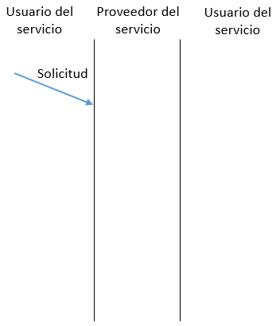

Introducción a arquitecturas de protocolos
En el material expuesto a continuación se describirán las arquitecturas de protocolos y sus conceptos más básicos y fundamentales.
Los temas tratados serán:
- Concepto de arquitectura
- Modelo simple de arquitectura
- Conceptos básicos usados en las arquitecturas
- Proceso de encapsulamiento
En algunas secciones se encuentran secuencias explicativas donde se debe avanzar (o retroceder) utilizando los botones correspondientes. Tambien es posible encontrarse con siglas o palabras con links que dirigen a un glosario con sus definiciones. Al abandonar una sección para dirigirse a otra, no se pierde el avance en las secuencias.
En la barra de la parte superior de la pantalla es posible dirigirse a los otros materiales disponibles haciendo click en la opción deseada.
Necesidad de Arquitectura
La comunicación entre computadores puede llegar a ser bastante compleja considerando todos los procedimientos que se deben realizar.
Al necesitar realizar una transferencia de un archivo entre dos computadores, además de contar con un camino para realizar la comunicación—ya sea una red o de forma directa—se debe cumplir con ciertas tareas que aseguren esta comunicación. Algunas de las tareas más básicas serían:
- Que el sistema de origen proporcione la identificación del sistema destino a la red de comunicación
- Que el sistema de origen compruebe que el sistema destino está preparado para recibir datos
- Que la aplicación de transferencia de archivos en el sistema origen se asegure que la aplicación del destino esté lista para recibir y almacenar el archivo para el usuario
- Que uno de los dos sistemas se encargue de traducir si es que los formatos de los archivos son incompatibles entre los sistemas
Definición
Entre los computadores que se comunican debe haber un grado de cooperación alto que considere todas estas tareas. Debido a la complejidad de esto, es que la lógica para llevar a cabo la comunicación no se implemente en un módulo único que resuelva todas estas tareas, si no que se cuenta con varios módulos donde cada uno realiza una tarea específica por separado.
Estos módulos se disponen en forma de capas en una pila vertical, lo que constituye una arquitectura de protocolos.
Cada capa realiza tareas relacionadas entre sí, siendo las capas inferiores las que realizan tareas más básicas, olvidándose las capas superiores de las funciones realizadas por las capas que estén abajo de ellas. Estas capas se definen de tal forma que cambios realizados en una no afectan a las otras. Se necesita que exista el mismo conjunto de capas en los dos sistemas a comunicar, logrando la comunicación al hacer que cada capa de un sistema se comunique con la capa homóloga del otro intercambiando bloques de datos según protocolos.
Modelo simple de 3 capas

Se implementan las tareas 3 y 4 por el módulo de transferencia de archivos, donde los módulos de ambos sistemas intercambian archivos y órdenes
Servicio y protocolo
Una función global de comunicación se divide en cierto número de capas o módulos, donde cada capa está diseñada para que las interfaces entre ellas sean tan simples como sea posible y que dentro de cada una se suministre el servicio a la capa superior, y a la vez el protocolo con la capa par en el sistema remoto. La normalización requerida en cada capa para proveer esto es:
Primitivas de servicio
Los servicios entre capas adyacentes se describen en términos de primitivas y mediante los parámetros involucrados (datos e información de control). Una primitiva es una especificación de una función que se lleva a cabo. En las arquitecturas existen cuatro tipos de primitivas de servicio:
Solicitud: Emitida por el usuario del servicio para invocar un servicio y pasar los parámetros requeridos
Indicación: Emitida por el proveedor del servicio para indicar que ha sido invocado un procedimiento por el usuario del servicio en la entidad par de la conexión y para entregar los parámetros asociados
Respuesta: Emitida por el usuario del servicio para confirmar algún procedimiento invocado mediante una indicación a ese usuario
Confirmación: Emitida por el proveedor del servicio para confirmar un procedimiento invocado previamente por una solicitud del usuario del servicio
Diagrama temporal de las primitivas

En una transferencia de datos desde una entidad (N) a su entidad par (N) en otro sistema se verifican los siguientes hechos: La entidad origen (N) invoca a su entidad (N-1) con una primitiva de solicitud. Se asocian los parámetros correspondientes, como los datos y la dirección destino.
Encapsulamiento
A continuación se muestra la interacción entre los módulos para la transferencia de un bloque de datos. Este proceso describe el funcionamiento general de una arquitectura de protocolos.
Desde el computador A se pretende transferir un archivo registro a registro al computador B.
Glosario
Protocolo: Una serie de reglas o convenciones que se verifican en los bloques de datos por las capas correspondientes. Estas reglas verifican aspectos como la sintaxis, semántica y temporización.
PDU: Unidad de datos de protocolo. Es la unidad de datos especificada en cada protocolo de una capa. Contiene información de control del protocolo junto a datos del usuario.
SAP: Punto de acceso al servicio. Es una locación o puerto en la que una capa puede solicitar servicios de otra capa.